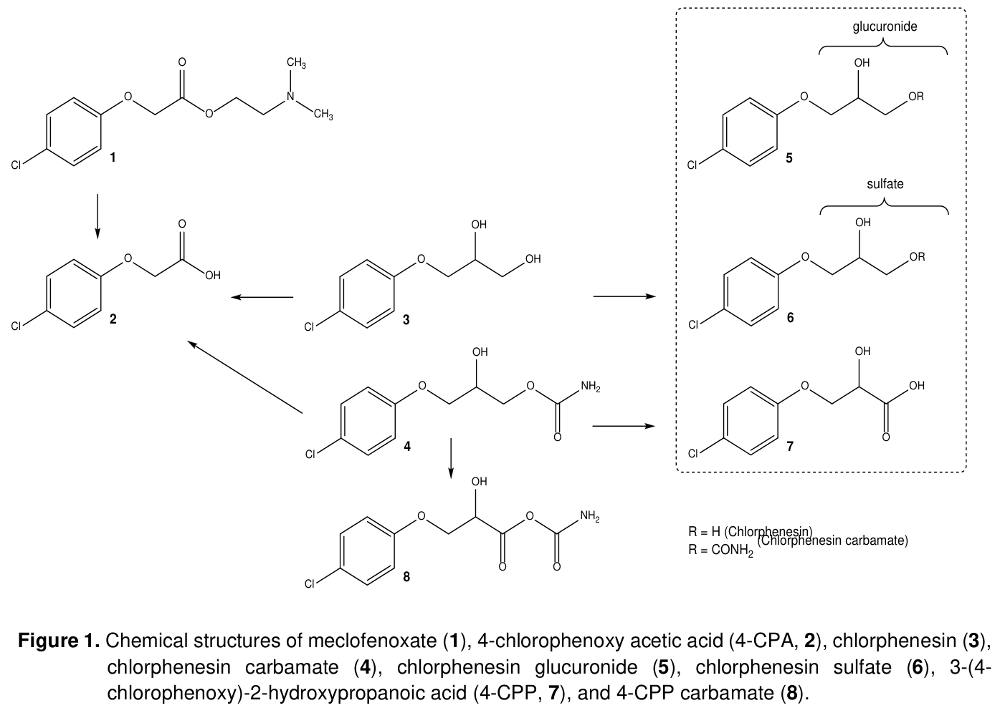

Technical Letters · TL01
Edition v4.0, 2021 (version 4.0) · effective 24 November 2021 · current
Retrieved on 26 November 2026 from https://www.wada-ama.org/sites/default/files/2022-01/tl01_meclofenoxate_v4.0.pdf
Editions: v4.0, 2021 (current) · v3.0, 2021 · v2.0, 2006
p. 1
MECLOFENOXATE
1.0 Introduction
WADA wishes to draw the attention of the Laboratories to the following observations and instructions on the analysis, evaluation and reporting of analytical results for Meclofenoxate.
Meclofenoxate is rapidly degraded to 4-Chlorophenoxyacetic acid (4-CPA) in biological fluids (e.g., human plasma or urine)[1,2]. However, the presence of 4-CPA in urine may originate not only from meclofenoxate Use, but also from the following permitted administrations:
i. Food containing residues of 4-CPA, which is also used as an herbicide and a plant growth regulator in some countries or regions of the world[3].
[Comment: The substances from the chlorinated phenoxy acid herbicides (CPAHs) class, which includes 4- CPA, present similar pharmacokinetics, and after ingested, they are rapidly eliminated unchanged in the urine[3,4].]
ii. Chlorphenesin [3-(p-chlorophenoxy)-propane-1,2-diol], a non-prohibited substance that is used as a preserving agent in cosmetics and lotions or approved in selected countries, as Chlorphenesin carbamate, for the relief of muscle pain.
[Comment: Chlorphenesin functions as a biocide in cosmetics and is used at concentrations up to 0.32% in rinse-off products and up to 0.3% in leave-on products[5-7].
Chlorphenesin is converted into 4-CPA after oral or transdermal administration, readily exceeding urinary concentrations of 5 µg/mL. Diagnostic Markers for the application of chlorphenesin-containing products are 3-(4-chlorophenoxy)-2-hydroxypropanoic acid (4-CPP), Chlorphenesin glucuronide and Chlorphenesin sulfate (see Figure 1). These Metabolites are formed from chlorphenesin and chlorphenesin carbamate, but not from meclofenoxate.[8]]
p. 2

Figure 1. Chemical structures of meclofenoxate (1), 4-chlorophenoxy acetic acid (4-CPA, 2), chlorphenesin (3), chlorphenesin carbamate (4), chlorphenesin glucuronide (5), chlorphenesin sulfate (6), 3-(4-chlorophenoxy)-2-hydroxypropanoic acid (4-CPP, 7), and 4-CPP carbamate (8).
2.0 Analysis and Reporting Requirements
Before reporting a result as an Adverse Analytical Finding (AAF) for meclofenoxate, Laboratories shall exclude the consumption of 4-CPA contaminated food and/or exposure to chlorphenesin-containing products or chlorphenesin carbamate as the origin of the finding, as per Table 1 below.
In order to probe for the presence of chlorphenesin or chlorphenesin carbamate-derived Metabolites in urine Samples, which provides evidence for a permitted source of 4-CPA, both GC-MS(/MS) as well as LC-MS(/MS) are applicable Analytical Methods. Detecting either chlorphenesin or chlorphenesin carbamate after hydrolysis of the glucuronide and/or sulfate or targeting the intact chlorphenesin or chlorphenesin carbamate conjugates or 4-CPP can readily indicate whether the origin of the detected 4-CPA is related to the permissive use of chlorphenesin-containing products or chlorphenesin carbamate drugs. For more details refer to Rubio et al[8].
p. 3
Table 1. Conditions for reporting meclofenoxate findings ("A" Sample):
| Condition | Meclofenoxate | 4-CPA | Chlorphenesin or chlorphenesin carbamate Metabolite(s)ᵃ | Report finding as |
|---|---|---|---|---|
| 1 | > 50 ng/mL | ᵇ | N/A | AAF |
| 2A | ≤ 50 ng/mL or Not Detected | ≤ 5 µg/mL | N/A | Negative Finding |
| 2B | ≤ 50 ng/mL or Not Detected | > 5 µg/mL | Detected | Negative Finding |
| 2C | ≤ 50 ng/mL or Not Detected | > 5 µg/mL | Not Detected | AAF |
a This applies to any chlorphenesin or chlorphenesin carbamate Metabolite (see Figure 1).
b When meclofenoxate is detected at an estimated concentration higher than (>) 50 ng/mL in the "A" Sample and reported as an AAF, 4-CPA shall also be reported if its estimated concentration is higher than (>) 50 ng/mL.
For the "B" Sample, confirmation of the presence of either Analyte (in compliance with the TD IDCR[9]) is sufficient for the AAF to be valid. No quantification or estimation of the Analyte concentration is necessary.
N/A: Under this condition, presence or absence of this substance in the Sample is irrelevant.
2.1 "B" Sample Confirmation
- Due to the instability of meclofenoxate in urine, when condition 1 in Table 1 is met in the "A" Sample, the identification of meclofenoxate in the "B" Sample is not necessary. In such cases, the "B" Confirmation Procedure may only confirm the presence of 4-CPA (in compliance with the TD IDCR[9]) for the AAF to be valid. No quantification or estimation of concentrations of either meclofenoxate or 4-CPA is necessary;
- When condition 2C in Table 1 is met in the "A" Sample, the "B" Sample results shall only confirm the presence of 4-CPA (in compliance with the TD IDCR[9]) and the absence of chlorphenesin or chlorphenesin carbamate Metabolite(s) for the AAF to be valid. No quantification or estimation of the concentration of 4-CPA is necessary.
3.0 References
[1] Yoshioka S, Yukio A and Mitsuru U. Kinetics of hydrolysis of meclofenoxate hydrochloride in human plasma. J Pharm Pharmacol. 39(3): 215, 1987.
[2] Guddat S et al. Detection of meclofenoxate and its degradation products Dimethylaminoethanol and p- chlorophenoxyacetic acid. In Recent Advances in Doping Analysis (14), Schanzer W, Geyer H, Gotzmann A, Mareck-Engelke U (eds). Sport und Buch Strauß: Koln, 399, 2006.
[3] Arnold E K and Beasley V R. The pharmacokinetics of chlorinated phenoxy acid herbicides: a literature review. Vet Hum Toxicol. 31(2): 121, 1989.
[4] Aprea C, Sciarra G and Bozzi N. Analytical methods for the determination of urinary 2, 4-p. 4 dichlorophenoxyacetic acid and 2-methyl-4-chlorophenoxyacetic acid in occupationally exposed subjects and in the general population. J Anal Toxicol. 21(4): 262, 1997.
[5] Johnson W et al. Safety Assessment of Chlorphenesin as Used in Cosmetics*. Int J Toxicol*. 33(2 suppl): 5S15S, 2014.
[6] Halla N et al. Cosmetics Preservation: A Review on Present Strategies. Molecules 23(7):1571, 2018
[7] Panico A et al. Skin safety and health prevention: an overview of chemicals in cosmetic products. J Prev Med Hyg. 60(1): E50-E57, 2019.
[8] Rubio A et al. Chromatographic-mass spectrometric analysis of the urinary metabolite profile of chlorphenesin observed after dermal application of chlorphenesin-containing sunscreen. Rapid Commun. Mass Spectrom. (DOI:10.1002/rcm.9183, 2021).
[9] WADA Technical Document TD IDCR: Minimum Criteria for Chromatographic-Mass Spectrometric Confirmation of the Identity of Analytes for Doping Control Purposes.
[Current versions of WADA Technical Documents may be found at https://www.wada-ama.org/en/what-wedo/science-medical/laboratories ]
Retrieved on 26 November 2026 from https://www.wada-ama.org/sites/default/files/2022-01/tl01_meclofenoxate_v4.0.pdf